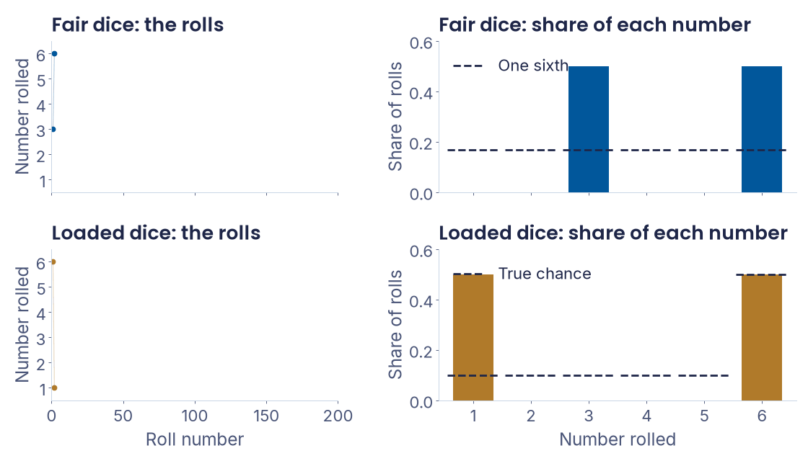
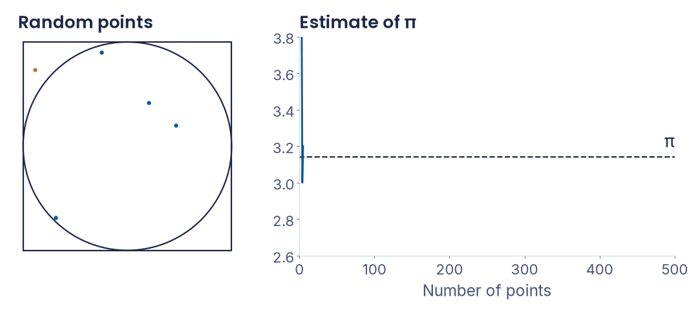
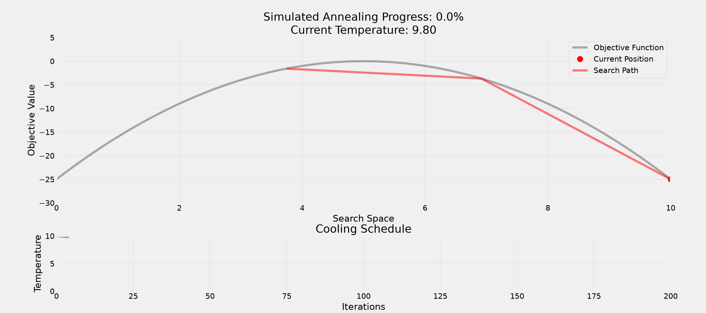
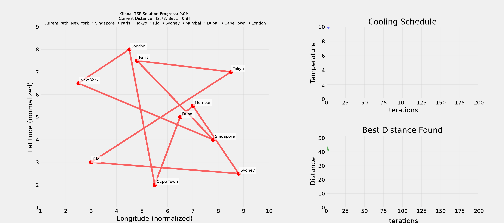

Lecture V: Randomness
Programming: Everyday Decision-Making Algorithms
Planningio GmbH
Today in one sentence
When a problem is too big to solve exactly, a bit of randomness often gets you a good answer fast.
Why it matters
Will your project finish on time? In which order should a driver visit 20 customers so that the tour is as short as possible? Questions like these are too complex to calculate exactly. Companies use randomness every day to estimate risks, plan delivery tours, survey customers and learn from a few what is true for the many.
Roadmap
- Randomness is a tool
- Simulate instead of calculate: Monte Carlo
- Search smarter with chance
- Sample instead of guess
What comes to your mind?
Question: What comes to your mind when you think of randomness?
Where does randomness show up?


What is the opposite of randomness?
Question: What’s the opposite of randomness?
- Determinism: same input, same output
- Predictability: knowing the outcome in advance
- Consistency: reliable patterns
- Boredom?
Are these dice fair?
Question: How would you test if dice are fair?
- Send them to a lab to check weight and balance
- Or simply: roll them many times
- Count how often each number comes up
- Fair dice show each number about one sixth of the time
Fair and loaded dice after 200 rolls

Where do you meet randomness every day?
Question: Where do you encounter randomness in daily life?
- A/B tests: visitors are assigned to versions at random
- Two-factor codes: random numbers protect your login
- Surveys: a random sample gives an unbiased picture
- Spotify shuffle: made deliberately less random, because true randomness felt wrong to users1
- Tax audits: random checks keep everyone honest
- Lotteries: some universities allocate study places by lottery
Randomness is a tool, not just a gamble
- Fairness: nobody can influence the outcome
- Security: attackers cannot guess what comes next
- Estimating: try many random cases instead of calculating every one
- Searching: random steps lead out of dead ends
Estimating and searching are our topics today.
Can a computer roll dice?
Question: How can a machine that only calculates produce randomness?
True randomness
- comes from physics
- for example radioactive decay or atmospheric noise
- cannot be repeated
Pseudo-randomness
- comes from a calculation
- looks random, but follows a rule
- can be repeated exactly
Computers do not roll dice, they calculate. The starting value is called the seed. Same seed, same numbers: that is why your tutorial results are reproducible.
Roadmap
- Randomness is a tool
- Simulate instead of calculate: Monte Carlo
- Search smarter with chance
- Sample instead of guess
Some things are too big to count
Question: How many possible orders exist for a shuffled deck of cards?
80658175170943878571660636856403766975289505440883277824000000000000That is more than the number of atoms on Earth.1
No computer can ever go through all of these orders one by one.
Question: So how do we answer questions about card games?
A card game in 1946
Question: Anybody ever heard of Monte Carlo methods?
- In 1946, the mathematician Stanislaw Ulam was recovering from an illness and played solitaire
- He wondered: what is the chance of winning?
- Calculating it was hopeless. So he thought: just play many games and count the wins
- The idea became the Monte Carlo method, named after the casino in Monaco1
How could we estimate π?

- Throw random points into the square
- Count how many land inside the circle
- The more points we throw, the closer we get to π
The idea goes back to Buffon, who in 1777 dropped needles on lined paper.1
Let’s throw points

Monte Carlo in business: a range instead of a single forecast
- Project planning: how likely do we finish before the deadline?
- Finance: how much could a portfolio lose in a bad month?
- Inventory: how much stock covers an uncertain demand?
The recipe: describe each uncertain input as a range, draw random values, repeat thousands of times, count.
Will we finish in 25 days?
A project with three tasks. Each one can take longer than planned:
| Task | Best case | Most likely | Worst case |
|---|---|---|---|
| Requirements | 3 | 5 | 10 |
| Build | 8 | 12 | 20 |
| Test | 2 | 4 | 8 |
The plan adds up the most likely values: 5 + 12 + 4 = 21 days. The deadline is 25 days.
Question: How sure are you that we finish on time?
We simulate the project 10,000 times

- Only 18 % finish within the planned 21 days
- Only 63 % finish by the deadline
- On average, the project takes 24 days
- Why? Each task can run over by more than it can come in early.
Monte Carlo in real life
- You: plan with a buffer. Adding up the most likely values is too optimistic.
- Companies: plan projects and budgets as a range with probabilities, not as a single number
When you can’t calculate it, simulate it.
Roadmap
- Randomness is a tool
- Simulate instead of calculate: Monte Carlo
- Search smarter with chance
- Sample instead of guess
Remember Lecture IV?
- With dependencies, there is often no quick recipe for the best plan
- We said: companies use software that searches for a good plan
- Today: how such a search works, and why chance helps
Ten cities, one trip: which order is shortest?
Question: In which order would you visit 10 cities by plane with minimal total distance?
3628800Question: What could be a strategy?
Brute force: try every tour
- Try every possibility
- Total possible tours: 10! = 3,628,800
- Guaranteed to find best solution
- If each check takes 1ms: 1 hour to check all tours
Question: What could be the problem with this approach?
What about twenty cities?
- For 20 cities: 20! = 2.4 quintillion tours
- About 77 million years at 1 ms per check
- Every additional city multiplies the effort: hopeless for real problems
Greedy: always take the nearest city
- From each city, fly to the nearest city you have not visited yet
- Never look back or change earlier choices
- Fast and simple
Problem: the last flights are often very long, because the near cities are already used up.
Hill climbing: improve step by step
- Improve the solution by small changes, keep the better one
- Like climbing in fog: you only see your immediate surroundings
- You get stuck on a local optimum, a small hill, and never see the mountain
Question: How would you escape a local optimum?
Shake it up: start again somewhere random
- When you are stuck, jump to a random new starting point and climb again
- Repeat a few times, keep the best result
- Computer scientists call this random-restart hill climbing1
Simulated annealing
- Make random changes and accept improvements
- Sometimes accept a worse change
- Over time, accept worse changes less and less
- How often we accept a worse change is called the temperature: high at the start, low at the end
Question: Why accept a worse change at all?
A worse step can lead out of a dead end, towards a higher hill.
The name comes from metalworking: heat the metal, then let it cool slowly.1
Annealing on a simple curve

Annealing finds a short tour through ten cities

Explore early, exploit late, again
- Annealing starts with a lot of randomness and gets more careful over time
- That is exactly the idea from Lecture II: explore while you have time, exploit when the end is near
- The book’s advice for life: try a lot early, then settle down1
Random search in real life
- You: stuck on a problem? Change something at random: another place, another order, another person to ask
- Companies: delivery tours and production plans that nobody can calculate exactly are found by software that searches with chance
Randomness is not giving up. Often it is the only way through.
Roadmap
- Randomness is a tool
- Simulate instead of calculate: Monte Carlo
- Search smarter with chance
- Sample instead of guess
The 1936 election: two polls
In 1936, the United States elected a president: Roosevelt or Landon.
- Poll A: 10 million ballots mailed, 2.4 million answers1
- Poll B: about 50,000 people, chosen to represent all voters
Question: Which poll would you trust?
The smaller poll was right
- Poll A, by the magazine Literary Digest, predicted a clear win for Landon1
- Roosevelt won with about 61 % of the votes and 46 of 48 states
- Poll B, by George Gallup, got the winner right
Why? The magazine took its addresses from phone books and car registrations. In the Great Depression, those were the wealthy.
How you choose matters more than how many you ask.
Where would you add armor?

- In World War II, the US military examined the planes that came back from their missions
- Most bullet holes were in the wings and the fuselage
Question: Where would you add armor?
Where there are no holes
The statistician Abraham Wald said: where there are no holes1
Planes hit in the engines never came back. They are missing from the sample.
This is called selection bias: what we see is not a fair picture of the whole.
Who is missing from your data?
- You: online reviews are written mostly by the very happy and the very angry
- You: social media shows the highlights, not the ordinary days
- Companies: studying only successful companies teaches the wrong lessons
- Companies: customer surveys are answered mostly by fans
A random few can tell us about the many. But only if nobody is missing.
When should we use chance?
Use chance to
- explore new solutions
- estimate what we cannot calculate
- learn about the many from a random few
Avoid chance when
- the same input must always give the same result
- for example a bank transfer, the dose of a medicine or the brakes of a car
What we covered
Randomness is a tool
Chance makes systems fair, secure and unpredictable.
Simulate instead of calculate: Monte Carlo
Many random trials give an honest range instead of a single guess.
Search smarter with chance
Random steps lead out of dead ends.
Sample instead of guess
A few can tell us about the many, if nobody is missing.
Why it matters
Will your project finish on time? In which order should a driver visit 20 customers so that the tour is as short as possible? Questions like these are too complex to calculate exactly. Companies use randomness every day to estimate risks, plan delivery tours, survey customers and learn from a few what is true for the many.
When you can’t calculate it, simulate it.
Any questions
so far?
After the break: AI and a recap
- Tutorial V.I: How AI writes code
- Tutorial V.II: Recap of the course with randomness
Literature
Interesting literature to start
- Christian, B., & Griffiths, T. (2016). Algorithms to live by: the computer science of human decisions. First international edition. New York, Henry Holt and Company.1
Books on Programming
- Downey, A. B. (2024). Think Python: How to think like a computer scientist (Third edition). O’Reilly. Free online
- Elter, S. (2021). Schrödinger programmiert Python: Das etwas andere Fachbuch (1. Auflage). Rheinwerk Verlag.
Think Python is free online and a great start. Schrödinger programmiert Python is a playful alternative in German.
More Literature
For more interesting literature, take a look at the literature list of this course.
Lecture V: Randomness | Dr. Nils Roemer | Home